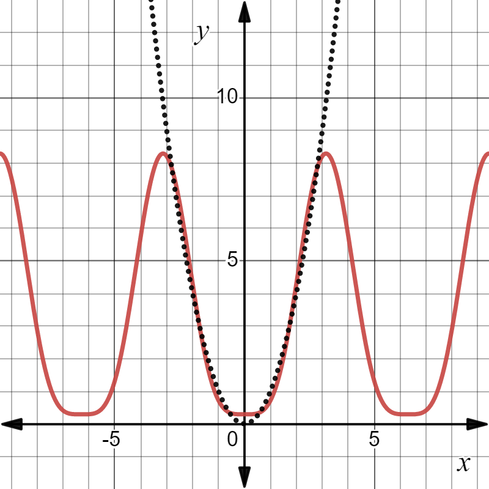
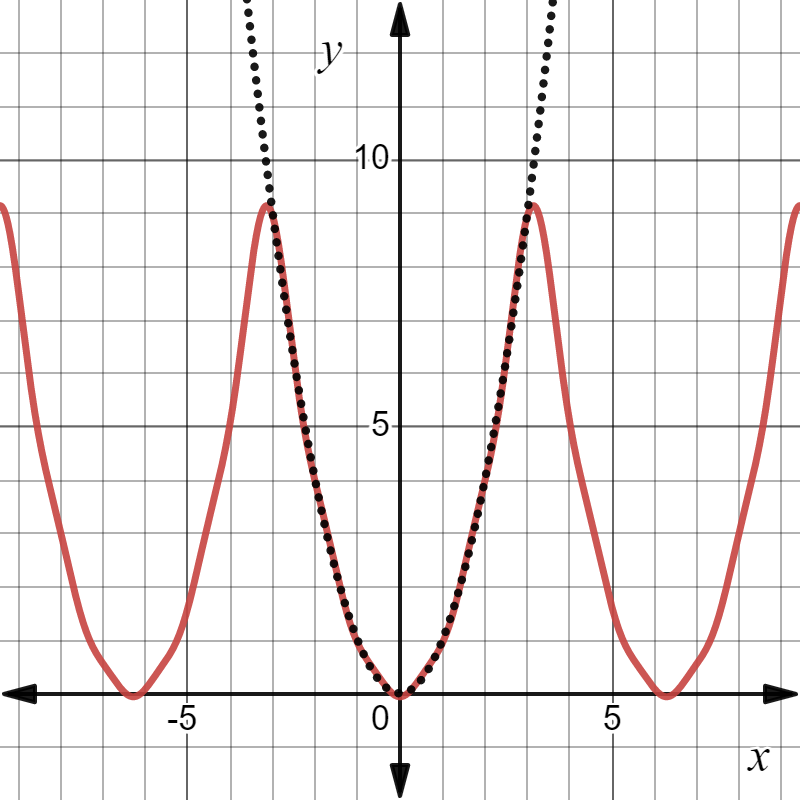
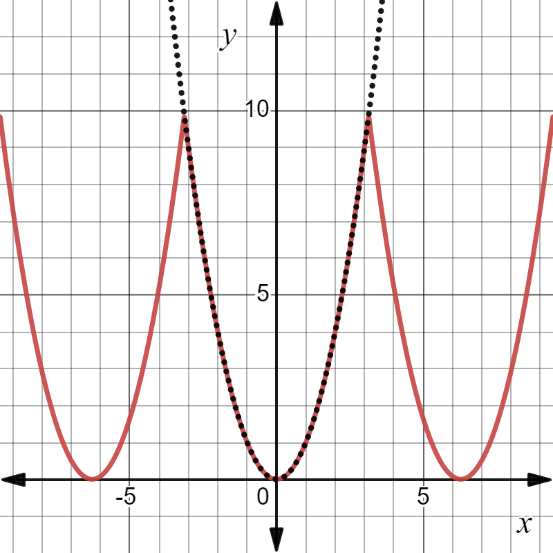
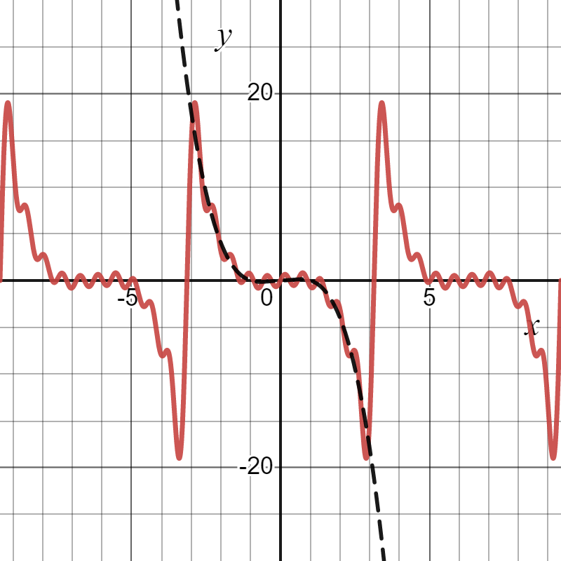
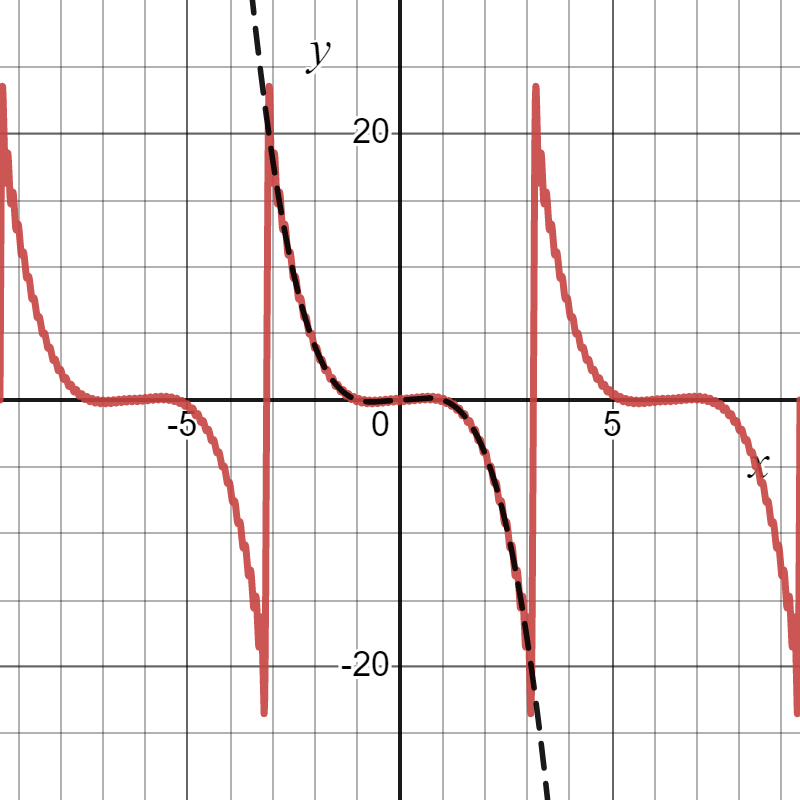
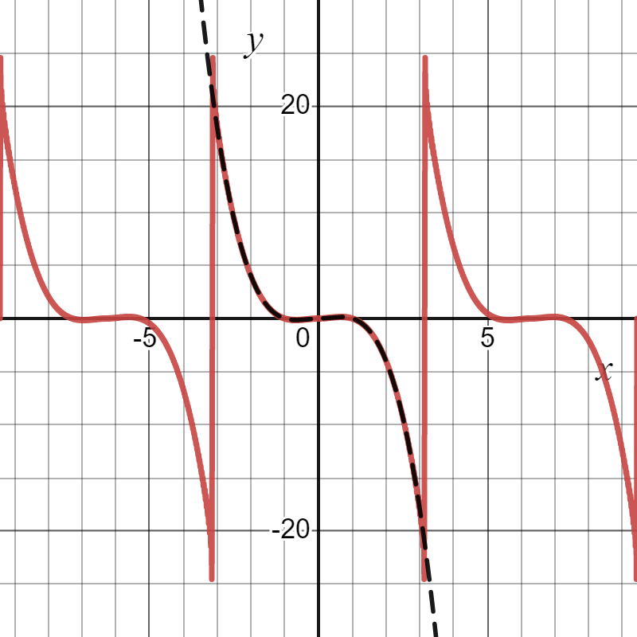

Advanced Calculus L4
- Fourier series of $2\pi$ periodic functions
- Example
- Sine and cosine series
Fourier series of periodic functions
Recall from last weeks lecture that given a $2\pi$ periodic function $f(x)$ we can write it as a Fourier series \[ \color{red}{\boxed{\color{white} f(x) \sim \frac{a_0}{2}+\sum_{n=1}^\infty \left(a_n\cos(nx)+b_n\sin(nx)\right) }} \] Here $a_n$ and $b_n$ are given by the Euler integrals \[ \color{red}{\boxed{\color{white} a_n = \frac{1}{\pi}\int_{-\pi}^\pi f(x)\cos(nx)\mathrm{d}x~ \text{ and }~ b_n = \frac{1}{\pi}\int_{-\pi}^\pi f(x)\sin(nx)\mathrm{d}x }} \]The FS was given by
$ \color{red}{\boxed{\color{white} f(x)\sim \sum_{n=1}^\infty \frac{2}{n\pi}\left( 1- (-1)^n\right)\sin(nx) }} $
Note
and ...

to get an approximation to $\pi$
Evaluating $f$ at $\pi/2$ gives \[ f\left(\frac{\pi}{2}\right) = 1 = \frac{2}{\pi}\left(2-\frac{2}{3}+\frac{2}{5}-\cdots\right) \] so that \[ \pi = 4-\frac{4}{3}+\frac{4}{5}-\frac{4}{7}\cdots \]

Advanced Calculus L4
- Fourier series of $2\pi$ periodic functions
- Example
- Sine and cosine series
Firstly, note that since the function $f$ is even \[ b_n = 0 \] This follows since $f(x)\sin(nx)$ is odd for $f$ even
Now \[ \begin{align*} a_0 = \frac{1}{\pi}\int_{-\pi}^\pi x^2\mathrm{d}x &= \frac{2}{\pi}\int_0^\pi x^2\mathrm{d}x\\ &=\frac{2}{\pi}\bigg[\frac{1}{3}x^3\bigg]_0^\pi = \color{red}{\boxed{\color{white}\frac{2}{3}\pi^2 }} \end{align*} \]



Advanced Calculus L4
- Fourier series of $2\pi$ periodic functions
- Example
- Sine and cosine series
Fourier sine series
As the previous examples have alluded, knowledge of whether a function is odd or even can greatly simplify the Fourier series computationsLet $f$ be $2\pi$ periodic. If $f$ is odd then its FS is given by \[ \color{yellow}{\boxed{\color{white} f(x)\sim \sum_{n=1}^\infty b_n\sin(nx) }} \] where \[ b_n = \frac{1}{\pi}\int_{-\pi}^\pi f(x)\sin(nx)\mathrm{d}x = \frac{2}{\pi}\int_0^\pi f(x)\sin(nx)\mathrm{d}x \]
Fourier cosine series
As the previous examples have alluded, knowledge of whether a function is odd or even can greatly simplify the Fourier series computationsLet $f$ be $2\pi$ periodic. If $f$ is even then its FS is given by \[ \color{yellow}{\boxed{\color{white} f(x)\sim \frac{a_0}{2}+\sum_{n=1}^\infty a_n\cos(nx) }} \] where \[ a_n = \frac{1}{\pi}\int_{-\pi}^\pi f(x)\cos(nx)\mathrm{d}x = \frac{2}{\pi}\int_0^\pi f(x)\cos(nx)\mathrm{d}x \]
Since $f$ is an odd function we have $a_0=a_n = 0~~\forall n\in\mathbb{N}$
To compute $b_n$ let us note a couple of simplifying points:
\[ \color{red}{\boxed{\color{white} b_n =\frac{2}{\pi}\int_0^\pi \left(x^2-x^3\right)\sin(nx)\mathrm{d}x }} \]
\[ \color{#FF33F9}{\boxed{\color{white} \begin{align*} f(x)&\sim \sum_{n=1}^\infty\left[\frac{2}{n\pi}(\pi^3-\pi^2)(-1)^n\right.\\&\left.+\frac{2}{n^3\pi}\left((2-6\pi)(-1)^n-2\right)\right]\sin(nx) \end{align*} }} \]
Hopefully, you can see how much more work would have been involved in this question had we not noticed the function is odd



Lecture 3 Review
- In this lecture we covered
- Periodic, odd and even functions
- Introduced Fourier series
- An example of how to compute FS
- After this lecture you should
- Know what periodic, odd and even functions are
- Understand the principle of linear superposition and have a basic idea of what a FS is